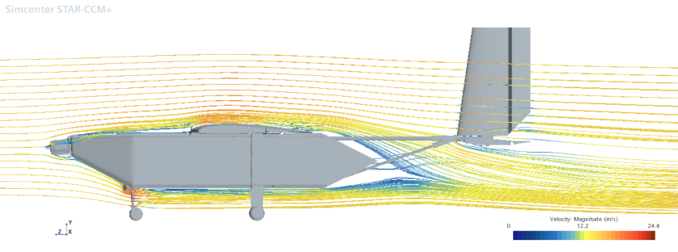

The Aerodynamics subteam is responsible for determining the configuration and dimensions of the aircraft required to best perform the competition missions and to maintain controlled flight. This includes a scoring analysis of the competition rules, sizing and stability calculations, airfoil selection, computational fluid dynamics (CFD) simulations, and wind tunnel tests.
A MATLAB code is used to analyze the scoring of each mission, as laid out in the competition rules, in order to determine which missions are the most critical and which aspects of the design should be focused on to maximize the overall competition score.
Subteam members determine the configuration and dimensions of the aircraft to ensure that the plane will be capable of flight, easy to control, and able to accomplish all of the required missions. This is done using hand calculations to promote a thorough understanding of the process, as well as with MATLAB code to easily optimize the design.
The Aerodynamics subteam selects the cross-sectional profiles of the wing and other aerodynamic elements, using data and plots to determine which shape will be the most effective. This is done both manually to promote understanding, and using a Python script for optimization.
CFD software is used to model how the aircraft will behave in flight, how much force is generated by each surface, and how efficiently the plane flies. The results of these simulations are used to improve the design and to provide data to other subteams. The CFD simulations are also validated using data collected by testing components in the UCLA wind tunnel, which gives us better insight into how our designs will behave in the real world.
